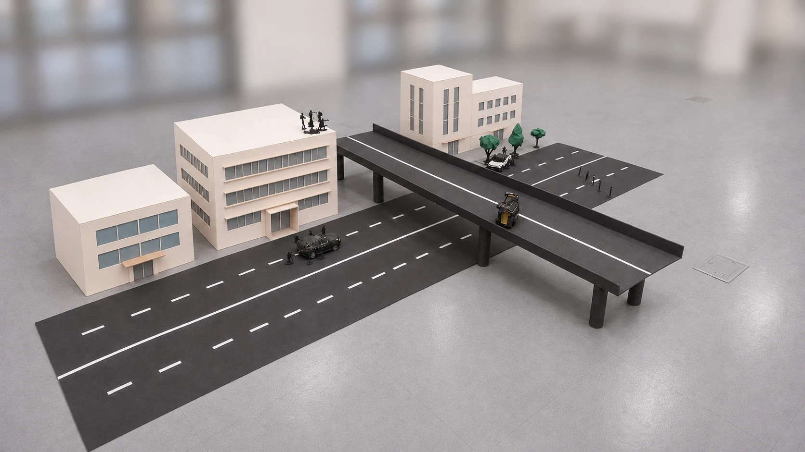
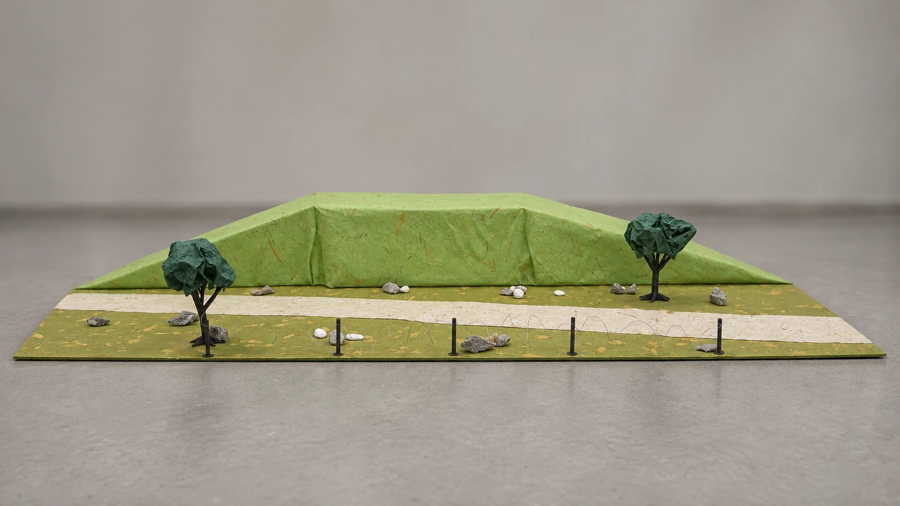
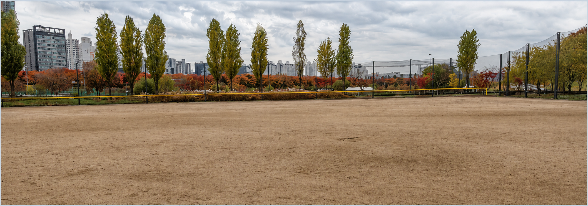

YOLOX detects objects in thermal frames
ONBOARD AI / DRONE / OBJECT DETECTION & TRACKING
CompletedARGUS: onboard AI thermal target detection and tracking for drones
ARGUS AI-powered Real-time Ground Object UAV Surveillance
ARGUS detects objects in thermal video and tracks the object selected by the operator. I led the six-person team and worked on thermal data, YOLOX-S training, Hailo-8 optimization and tracking through occlusion. In the final Raspberry Pi 5 benchmark, the team cut latency from frame receipt to detection from 23.5 ms to 9.1 ms. We tested the system in simulation and in indoor and outdoor flights.
- Period
- Sep–Nov 2026
- Team
- ARGUS, team of six
- Role
- Team lead
Thermal data collection and labeling automation
YOLOX training and Hailo NPU optimization
Multi-target tracking and occlusion handling
Test design and flight log analysis - Hardware
- F450 / Raspberry Pi 5 / Hailo-8 / LWIR V2-mini / PX4

01 / BACKGROUND
Why process onboard
The goal is to finish image processing on the aircraft, so the system keeps working even if the link to the ground is lost. A long-wave infrared (LWIR) camera keeps targets visible in the dark, and detection, tracking and follow decisions all run on the drone.
Follows the same object across frames
Computes velocity and yaw commands from the target position
02 / SYSTEM
Device roles and connections
The Raspberry Pi 5 processes thermal frames and tracks objects, while the Hailo NPU runs YOLOX-S inference. PX4 controls the aircraft.
The ground station displays the thermal video and detection overlays. The operator can select an object and start or stop following.
As team lead, I coordinated the schedule and assigned responsibilities. I collected thermal data, automated labeling, trained YOLOX-S, and worked on NPU optimization, quantization and tracking through occlusion.
Of the airframe's 500 g payload, the team used 322 g. The compute stack of Raspberry Pi 5, cooler, Hailo-8 and UPS weighs 226 g, and the camera, wiring and prop guards add 96 g. The compute section draws 9 W: 4.0 W for the Raspberry Pi 5 and cooler, 2.5 W for the Hailo-8 and 1.2 W for the LWIR camera.
The camera sends raw 14-bit frames at 30 FPS, and the Raspberry Pi 5 converts them to 8-bit before the NPU. Onboard processes talk over Fast DDS publish-subscribe, and the ground station link carries MAVLink commands and RTSP video over wireless.

Ground station
The team built its own ground station. The top bar shows link status, and the left panel shows altitude and speed. The operator clicks a detection box in the thermal video to select a target, and issues takeoff and follow commands from the right panel.
The layout follows Astro UXDS, the US Space Force's public design system for command-and-control screens. Status is shown with both color and shape, and irreversible actions go through a confirmation dialog. Target symbols follow the MIL-STD-2525 military symbology standard: detected objects use the unknown symbol and the selected target uses the hostile symbol.
03 / DETECTION
Thermal detection and processing optimization
Our own thermal data and a preprocessing comparison
Our team collected 41,227 thermal frames from September to November. We filmed RC tanks, people and vehicles from the ground and from the drone, in the morning, during the day and at night, at outdoor sites such as rooftops, parks and a sports field and on indoor urban and off-road models the team built. I took part in filming and automated labeling. The first 1,000 images were drafted with an LLM; after that, the trained model was connected to X-AnyLabeling and we corrected the boxes it drew. The team reviewed labels for 34,155 images across three classes.
I worked with the teammate responsible for preprocessing to compare Min-Max, CLAHE and Double Plateau. We used the same source images, labels and training settings for all three models, then compared their performance on 4,107 evaluation images.
Min-Max lost contrast across the whole frame whenever a very hot or cold spot appeared, and CLAHE amplified the grass background enough that the tank was missed in some scenes. I chose Double Plateau based on both detection accuracy and processing time on the Raspberry Pi 5.

| Preprocessing | mAP50 | mAP50–95 | Recall | Preprocessing time |
|---|---|---|---|---|
| Min-Max | 0.900 | 0.706 | 0.881 | 0.99 ms |
| CLAHE | 0.978 | 0.740 | 0.953 | 10.01 ms |
| Double Plateau Chosen | 0.979 | 0.751 | 0.957 | 1.12 ms |
In an earlier experiment, the false-positive rate fell from 8.7% to 0% on the background images added to training. On held-out evaluation data, the number of false-positive boxes fell by about 41%. The final requirements test recorded a 0.13% false-positive rate and 0.979 mAP@50.
C++ preprocessing and NPU input optimization
I worked with the teammate responsible for preprocessing to measure latency at each stage on the Raspberry Pi 5. Preprocessing was ported to C++, and the frame was split into four horizontal bands so four OpenMP threads build the histogram in parallel.
I handled the path from YOLOX-S to ONNX, INT8 quantization and Hailo compilation into a HEF file, along with NPU optimization. Raising the compiler optimization level to max loaded the whole model at once instead of swapping two halves, which cut inference from 11.1 ms to 6.4 ms. Replacing the three copied grayscale channels with a single-channel input, by summing the three first-layer filters into one, brought it to 5.9 ms.
| Metric | Initial | Optimized |
|---|---|---|
| Preprocessing | 6.74 ms | 0.74 ms |
| NPU inference | 11.1 ms | 5.9 ms |
| Frame receipt to detection | 23.5 ms | 9.1 ms |
61.3% lower latency from frame receipt to detection.
The end-to-end comparison used recorded input played at 30 FPS. The detailed timing breakdown reports a median of 9.36 ms from frame receipt to detection publication. The median latency from video input to follow command was 13.2 ms, within the 33.33 ms requirement.
Latency across development milestones
| Milestone | Measured latency |
|---|---|
| Initial configuration | 23.5 ms |
| Oct 21 | 19.3 ms |
| Oct 29 | 16.9 ms |
| Oct 30 | 10.8 ms |
| Final benchmark | 9.1 ms |
04 / TRACKING
Multi-target tracking, occlusion handling and following
Multi-target tracking that accounts for drone motion
Trackers such as SORT and ByteTrack link boxes by their overlap (IoU) between frames. When the drone turns or tilts, the whole image shifts, the overlap drops to zero, and the same target gets a new ID.
So the team adopted UCMC. The bottom center of each box is projected onto the ground using the drone's attitude and altitude, and a Kalman filter's predicted position is compared with new observations using an uncertainty-aware distance. A track is confirmed after 2 consecutive frames and kept for 90 frames after it is lost.
The team built its own simulation in PX4 SITL and Gazebo Harmonic, with off-road terrain, an M1 tank model and rocks for occlusion, and ran the same C++ tracking and following code used on the drone.
| Tracker | Link failure rate | Median processing time |
|---|---|---|
| Hybrid-SORT | 2.2% | 1.214 ms |
| ByteTrack | 2.6% | 0.634 ms |
| UCMC Chosen | 0.4% | 0.388 ms |
Track IDs and the selected target are managed separately
The system keeps the operator’s selection separate from the current track ID. This lets the team evaluate whether tracking returns to the same object after an occlusion.
When several targets look alike
When another tank of the same shape appears while one tank is being followed, objects of a different class are excluded first, and links are made by predicted ground position. After two targets cross, the one closer to the predicted position is kept.
The last check compares heat distributions. A histogram is built for each object from the raw 14-bit thermal data, and their similarity separates targets that look alike. In the real-flight example below, the selected tank #12 scored 0.91 and the newly appeared #13 scored 0.62. If the selected target stays below the threshold for 0.5 s, following stops.
| Test | Result |
|---|---|
| Following failures in crossing simulations | 0 / 59,313 frames |
| Other objects misidentified in real flight | 0 / 16,791 frames |
| ID reuse blocked | 200 / 200 trials |
Handling target loss and operator input
When a new ID appears after an occlusion, the drone does not follow it right away; it becomes a relinking candidate. The system compares the Mahalanobis distance between the predicted position and each candidate, and waits for the next observation if two candidates are close or if swapping them would be just as plausible.
- New ID observedReturn to following only after checking that it links to the existing target
- Candidates too closeDefer linking if the squared Mahalanobis distances (d²) of the top two candidates differ by less than 4
- X-shaped crossingIf swapping the two targets gives a similar distance, make no link and wait for the next frame
When the target is hidden, the drone does not stop right away. If it has a speed history, it follows the predicted position at the speed from 60 frames earlier for up to 3 s. With no history, or after 3 s, it holds in place. A reappearing object is linked back to the same target only if the class matches, the size ratio is 0.5 to 2, it is within 2 to 4 m of the predicted position, and it is detected in 3 consecutive frames.
If the target is not found within 4 s, PX4 switches to position hold (Hold) and the ground station is notified; the operator must then select the target again. Any manual input disables automatic following, regardless of state.
| Setting | Occlusion | Trials | ID switches | Target kept |
|---|---|---|---|---|
| Simulation | 2 s fixed | 30 | 0 | 100% |
| Real flight | Up to 3 s | 58 | 2 | 96.6% |

Image processing and flight commands run in separate processes, so if one stops, the other detects it and puts the drone in a safe state.
If no new observation arrives within 250 ms, the drone stops moving; after 4 s it switches to position hold (Hold).
When a command’s 100 ms validity window expires, the onboard process immediately sends zero velocity and requests position hold (Hold). Following does not resume automatically after recovery.
Choosing a follow path with a fixed camera
The camera is fixed to the airframe. When the drone accelerates toward the target, it pitches forward, the camera tilts down with it, and the target can leave the frame. So closing the distance and keeping the target in view are scored together in one cost.
Each cycle, the planner samples candidate commands with different speeds and directions and simulates each one 2 s ahead in 0.1 s steps. The cost adds distance to the target, offset from the image center, tilt and safety penalties. The first command of the lowest-cost candidate is executed. Scoring the candidates takes 2.7 ms, and going from a frame to a command takes 13.5 ms on average.
| Candidate | Predicted tilt | Cost |
|---|---|---|
| A Hover | 0° | 133 |
| B Fast approach | 31° | 58,518 |
| C Chosen candidate Chosen | 1° | 108 |
Process connections and follow-command flow
The newest frame is processed first so stale video does not delay control. Detection, tracking and follow control run as separate processes that exchange small messages such as detection and tracking results. The onboard process, which talks to the flight controller, collects the commands and sends them to PX4.

05 / VALIDATION
Test results
The team followed the defense weapon-system development process (V-model). We wrote the system requirements (SSS), system design (SSDD), software requirements (SRS) and design (SDD, ICD). Testing went from unit tests (GTest) and integration tests (STD, STR) to indoor and outdoor flights, and each of the 31 SRS requirements was traced to the 18 test cases.
The 31 requirements, split into 12 functional, 5 performance, 4 interface, 5 safety and 5 environmental, and all 18 test cases passed. Outdoor flight was also tested.
I designed test scenarios and ran repeated trials in Gazebo and PX4 SITL. I also took part in flight tests and compared flight logs with simulation results to trace problems.
| Requirement | Target | Measured |
|---|---|---|
| NPU throughput | 20 FPS or more | 29.9 FPS |
| Video input to command latency (median) | 33.33 ms or less | 13.2 ms |
| Selected-target tracking retention | 90% or more | 96.6% |
| Detection mAP@50 / false-positive rate | 0.80 or more / 5% or less | 0.979 / 0.13% |
| Onboard computing power | 25 W or less | 9 W |
| Test stage | Passed |
|---|---|
| Board-level tests | 8 / 8 |
| Recorded-video playback and SITL | 7 / 7 |
| Indoor flight | 3 / 3 |
| Test | Conditions | Result |
|---|---|---|
| Target following | S-curves, sudden stops and reversing, crossing traffic | Followed in all 15 runs |
| Occlusion | 2 s full occlusion | Same target kept in all 29 runs |

Earlier simulation videos
These earlier videos, made before predicted motion was added, show the drone passing an identical tank and resuming after a rock occlusion.
These early vehicle-model videos show crossing traffic and following resuming after an occlusion.
Indoor and outdoor flight tests
Indoors, the team built its own urban and off-road models and flew at 1.7 m. On the urban model, a tank comes out from behind a building and passes under an elevated road, and the drone has to keep following the same target. On the off-road model, two tanks cross on a hill and a road, and the drone has to stay on the tank selected first.
Outdoor tests were held on the dirt field at Sinjeong airfield. From 4 m, the drone detected people and tanks with the camera at 30°, 45° and 60°, then tracked the selected target and descended to 3 m to follow it. The team also verified that the pilot could regain control via the RC transmitter.




